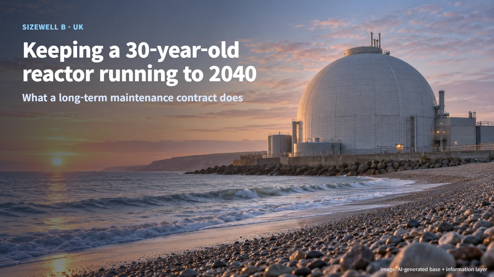
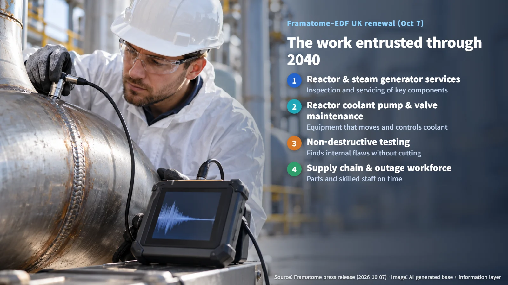
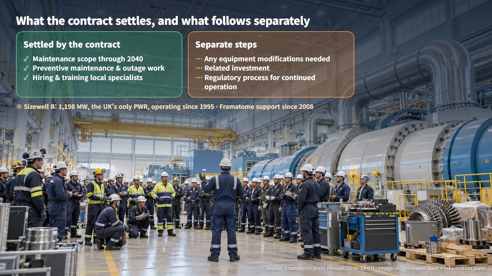

United Kingdom · Plant Maintenance
Keeping a 30-Year-Old Reactor Running to 2040: The Sizewell B Long-Term Maintenance Contract
Framatome and EDF UK have renewed the long-term service agreement for Sizewell B through 2040, covering planned preventive maintenance, outage work, supply chain coordination and the outage workforce.
When people hear that a nuclear plant has been running for more than 30 years, a natural first thought is: "Can equipment that old really still be in good shape?" It is the same unease we feel about an aging car. A nuclear plant, however, is managed on a fixed plan: it is regularly shut down, opened up, inspected and repaired, so its condition is tended throughout its life.
On October 7, 2026, the French nuclear company Framatome and the British generator EDF UK announced that they had renewed the long-term service agreement for the Sizewell B nuclear power station in the UK through 2040. Sizewell B has an installed capacity of 1,198 MW and is the only pressurized water reactor (PWR, a reactor that keeps its water under high pressure so it does not boil while it carries heat away) in the UK. It began operating in 1995, so it has now passed the 30-year mark. This contract offers a clear window into how an older plant is cared for, what a maintenance contract covers, and which separate steps sit alongside it.

Nuclear Plants Also Stop for Regular Check-Ups
A nuclear plant can look as if it runs nonstop all year, but at set intervals it stops generating and undergoes a major inspection. This is called planned preventive maintenance. Rather than fixing things after they break, engineers plan ahead to examine and service equipment before problems develop.
The whole period during which the plant is shut down and this maintenance work is carried out is called an outage. It is a lot like a regular full medical check-up. Someone may look perfectly healthy day to day, but scheduled screening is what catches hidden problems early.
There is a good reason for stopping generation. During operation, the key components around the reactor sit at high temperature and pressure, and people cannot get close enough to open them up. Only once the plant is shut down and its systems are brought to a stable state can workers take equipment apart, inspect it and replace parts as needed.
Inside a plant that has come to a standstill, a large team of technicians opens up and examines the equipment each of them is responsible for. That scene is the everyday work that underpins long-term operation of a nuclear plant.
The Work Entrusted Through 2040
Framatome has supported maintenance at Sizewell B since 2008. The new contract broadly covers the planned preventive maintenance and outage work needed for the plant's long-term operation strategy. The work described in the announcement falls into these main areas:
- Reactor and steam generator services: A steam generator is a large heat exchanger that passes heat from the water warmed in the reactor to a separate water loop, producing the steam that drives the turbine.
- Reactor coolant pump and valve maintenance: The reactor coolant pumps are the heart of the system, keeping the water that cools the reactor circulating without pause.
- Non-destructive testing: These inspections find cracks or flaws inside a component without cutting or breaking it, using methods such as ultrasound. A hospital ultrasound scan is a good comparison.
Non-destructive testing, which looks inside key components without taking them apart, is one of the most important ways to check the condition of aging equipment. The announcement itself also tied the contract to the systems that maintain safety, quality and plant performance.

People and the Supply Chain Complete the Work
What stands out is that the contract reaches beyond servicing equipment. Supply chain coordination and outage workforce management are also part of the scope. During an outage, a great deal of work is packed into a short window, so the right parts must arrive on time and qualified people must be brought in in the right order.
Framatome said it will carry out the work by combining specialist staff based in the UK with resources from France, Germany and the United States. The company also said it will continue recruiting, training and developing local maintenance specialists.
Technicians gathered from several countries working side by side with experts trained locally, all on one outage site: that is the picture a long-term maintenance contract actually creates. In the end, what keeps an older plant going is the machinery together with the people who know it well and the supply chain that supports them.
What the Contract Settles, and the Steps That Follow Separately
One distinction is worth keeping clear. The maintenance contract now runs through 2040, while the question of Sizewell B operating until 2040 moves forward through its own, separate steps.
This renewal settles who carries out maintenance, and with what scope. Any separate equipment modifications, investment and regulatory procedures for continued operation that long-term operation may require are handled as their own steps. Naming the maintenance provider is one stage; the regulator confirming safety and permitting continued operation is another.
Picture a maintenance schedule and a set of licensing papers sitting on two different desks. This announcement is news that the maintenance side is now organized for the long term.

The secret to running an older nuclear plant safely lies in steady inspection, skilled people and a separate regulatory process that oversees them, all meshing together. When looking at a plant's "age," considering how that plant is being managed alongside the number of years opens the way to sharper, more precise questions in place of vague worry.